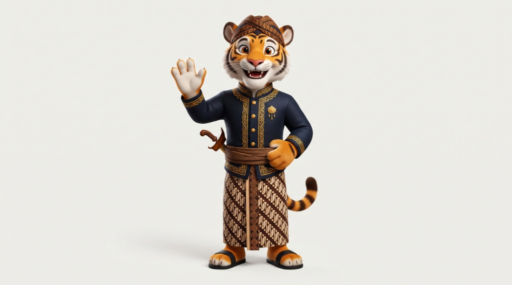

👑
Edy Sutanto
Kapten / Project Manager & IntegratorMemimpin arah proyek, mengelola repository GitHub, menyelesaikan merge conflict, menginisialisasi arsitektur fondasi, dan bertanggung jawab atas rilis deployment.
Platform storytelling digital yang didedikasikan untuk mendokumentasikan, melestarikan, dan menghidupkan kembali kekayaan sejarah peradaban, nilai-nilai tradisi luhur, dan hikmah legenda rakyat kepulauan Indonesia.

Si Loreng adalah karakter harimau nusantara berbusana adat Jawa (blangkon, beskap, dan jarik parang) yang menjadi duta persahabatan platform KisahNusantara. Hadir untuk menemani pembaca dengan fakta menarik dan nilai-nilai luhur budi pekerti tanah air!
Empat peran bersinergi menerapkan alur kerja modern Git & GitHub
Memimpin arah proyek, mengelola repository GitHub, menyelesaikan merge conflict, menginisialisasi arsitektur fondasi, dan bertanggung jawab atas rilis deployment.
Merancang tata letak visual imersif Glassmorphism, floating pill hero slider, integrasi maskot Si Loreng, dan responsivitas perangkat.
Melakukan riset mendalam terhadap 10+ kisah nusantara, menyusun narasi orisinal yang sarat nilai budi pekerti, dan kurasi lisensi gambar terbuka.
Mengimplementasikan logika pemanggilan data asinkron (fetch), algoritma pencarian instan (debounce), filter kategori terintegrasi, dan menyusun dokumentasi teknis.
Seluruh kode sumber proyek ini dapat ditinjau secara terbuka melalui repository GitHub kami. Rujukan narasi sejarah dan lisensi gambar telah didokumentasikan secara rinci pada berkas rujukan pustaka demi menjaga integritas akademik.